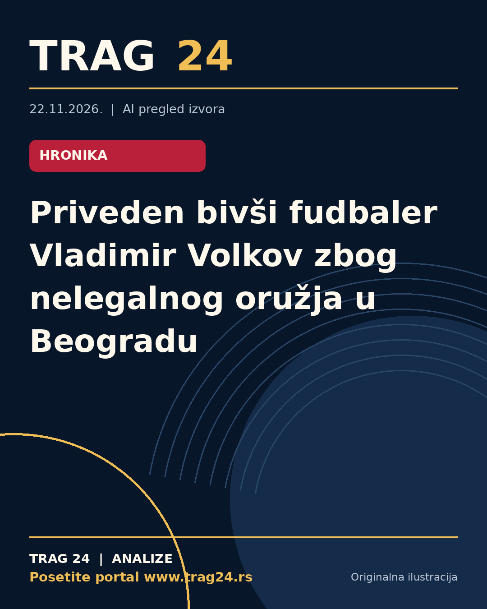

Priveden bivši fudbaler Vladimir Volkov zbog nelegalnog oružja u Beogradu

ŠTA SE DOGODILO
Bivši fudbalski reprezentativac i nekadašnji igrač Partizana, Vladimir Volkov (40), priveden je u Beogradu nakon što je policija u njegovom automobilu pronašla pištolj marke 'glok' sa izbrušenim fabričkim brojem i 11 metaka. Uz Volkova, privedene su još dve osobe, S. R. (28) i A. Đ. (36). Pored oružja, u vozilu je pronađena i jedna tableta za koju se sumnja da je opojna droga.
HRONOLOGIJA
Interventna jedinica 92 zaustavila je i kontrolisala vozilo u vlasništvu Vladimira Volkova danas oko 11 časova u Dunavskoj ulici u Beogradu. Tokom detaljnog pregleda, policija je pronašla ilegalni pištolj i sumnjivu drogu. Sve tri osobe su sprovedene u policijsku stanicu, a automobil je prevezen na službeni parking radi daljih provera i veštačenja. Policija nastavlja istragu radi utvrđivanja svih okolnosti i vlasništva oružja.
ŠTA NAVODE IZVORI
Svi pregledani izvori (Nova.rs, Kurir i Blic) prenose osnovne činjenice o pronalasku nelegalnog oružja i privođenju Vladimira Volkova i još dve osobe u njegovom vozilu. Izvori potvrđuju detalje poput marke i vrste pronađenog oružja, njegovog izbrisanog serijskog broja, kao i pronalaska sumnjive tablete. Takođe, svi navode da policija nastavlja dalje provere i da je vozilo odneto na veštačenje. Kurir izveštava dodatno o pratećim informacijama i okruženju događaja, ali bez novih činjenica o samom incidentu.
ŠTA JE POTVRĐENO
Postoje potvrđeni podaci da je policija pronašla pištolj marke 'glok' sa izbrušenim fabričkim brojem i 11 metaka u automobilu Vladimira Volkova, kao i jednu sumnjivu tabletu. Takođe je potvrđeno da su privedene tri osobe i da je automobil poslat na veštačenje. Mesto događaja je Beograd, konkretno Dunavska ulica, a vreme privođenja je oko 11 časova.
ŠTA NIJE POTVRĐENO
Nije potvrđeno kome oružje pripada, kao ni zašto je fabrički broj izbrisan. Ne postoje podaci niti potvrde o tome da li su privedeni bili uključeni u bilo kakvu krivičnu aktivnost ili kako su navodno pribavili to oružje i drogu. Nema izjava ili saopštenja policije koja bi objasnila dalje korake ili okolnosti slučaja.
ŠTA OSTАJE OTVORENO: Ostaje nejasno kome tačno pripada pronađeni pištolj i ko je odgovoran za posedovanje oružja i droge. Nije poznato da li je protiv privedenih podignuta krivična prijava ili kakvi će biti dalji pravni postupci. Takođe, nisu dostupni detalji o ishodu veštačenja, kao ni mogući motivi ili posledice ovog događaja.
Izvori
- https://nova.rs/vesti/hronika/priveden-bivsi-fudbaler-vladimir-volkov/
- https://www.kurir.rs/sport/fudbal/10169518/priveden-vladimir-volkov
- https://www.blic.rs/vesti/hronika/priveden-bivsi-fudbaler-vladimir-volkov-policija-u-njegovom-automobilu-pronasla/3h9jbdh
Ova analiza je pripremljena uz pomoć veštačke inteligencije na osnovu javno dostupnih izvora. Navodi izvora nisu nužno nezavisno potvrđeni.